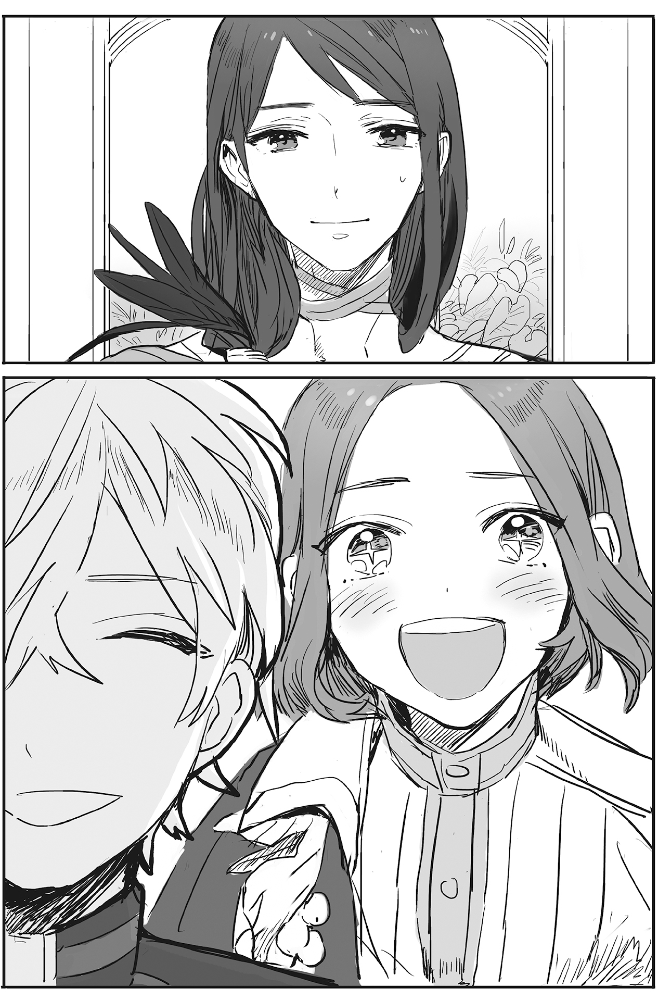
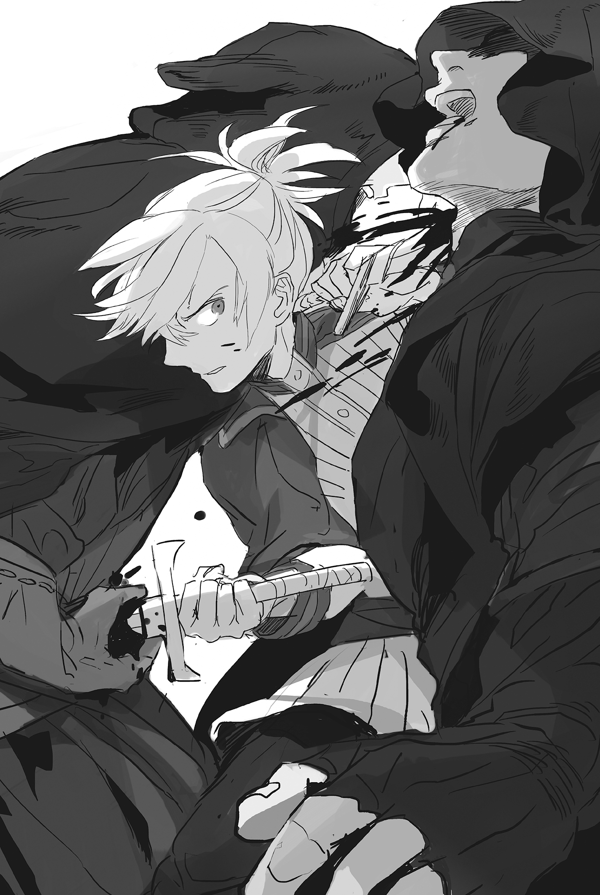

Chapter 1 – The One Who Will Succeed the Throne
.
Part 1
Sanjuan Kingdom is a country located to the south of Mauricia Kingdom.
It’s known as a maritime nation that stretched for a good distance to the east and west. The southern half of the country has hot subtropical weather.
The country thrives on its fishing and shipping industries. On the other hand, its agricultural production was limited. The majority of its grain came from exports from the Mauricia Kingdom.
Its relationship with Mauricia Kingdom was fundamentally good. Conversely, its relationship with its fellow maritime neighboring country, Trystovy, could only be considered bad.
Furthermore, political refugees in great numbers have been flooding into their country as of late due to the continuing civil war in the Trystovy Dukedom. It was starting to become a large social problem.
In such a situation, Baldr Cornelius was appointed to be an ambassador to the Sanjuan Kingdom. It was rare for someone his age to receive such an appointment even if one looked at the history of Mauricia Kingdom. His objective was, of course, to sell favor to the Sanjuan Kingdom and strengthen the relationship between the two countries.
.
「I should have dressed lighter than this……」
Baldr muttered while fanning his sweaty chest with his palm.
The heat and humidity felt like they had doubled since they passed the Piller Massif, which acts as the boundary between Mauricia and Sanjuan.
In both of his previous lives (Japan) and his present life (Mauricia Kingdom), Baldr was living in a country with a temperate zone── a country with four seasons. This heat that felt like it was coiling around his body was really uncomfortable for him.
Baldr wiped the sweat on his forehead with a white handkerchief that was Selina’s present for him. He recalled when his lovers sent him off from the royal capital tearfully three days ago.
He felt like Selina’s scent was drifting from the handkerchief.
Seyruun had been living together with him like family, while he had been interacting with Selina like a bosom buddy. But with the change of their relationship, their feelings also changed.
Since their relationship openly became lovers, the three of them had to tolerate various changes. There were really a lot of such things.
.
「E-err……can I perhaps ask young master to call me, Seyruun?」
「O-of course, Sey-nee……Seyruun.」
Seyruun fidgeted shyly while asking him pleadingly with an upward gaze. It was like she was being teased.
Baldr’s cheeks also reddened seeing that. It was a warming sight.
「T-then, p-perhaps I also……should call young master as h-husband……?」
「Whoats(What)?」
He wondered what kind of shaming play this was. Even so, he also certainly felt an indescribable sensuality and sweet pleasure from being called husband.
「……If Seyruun is alright with that……」
「H-husband!」
「Seyruun……」
「Husband……」
「Enough already ya two-!」
A sharp retort interrupted from the side of Baldr and Seyruun, who were staring at each other with glistening eyes while producing a bakaple(idiot couple) aura endlessly.
Baldr and Seyruun right now were the very picture of a stupid looking couple who flirted with each other without any regards to their surroundings. There was no way to defend their behavior, even with flattery.
Selina had to show them how to interact with each other as lovers with moderation here as the oldest one.
Yes, even if they were now lovers, she had to resolutely take the initiative and lead Baldr correctly──
「If Seyruun call ya husband, what should I call ya then……?」
Selina said that while pressing her chest on Baldr’s shoulder to lean on him.
The sensation of the heavily laden fruits being pressed on his shoulder, causing their shape to change elastically, made Baldr’s face turn boiling red. Seyruun frowned with displeasure.
「…………Come to think of it, I have a request to make to Selina.」
「A request from Baldr……ask me for anythin’.」
「We have finally became lovers, so can I fluff not just your ears but also your tail?」
「Funyah!?」
Her enthusiasm to take the lead had scattered to the wind.
Selina turned bright red until her neck and became scared stiff instantly. Her bushy tail turned toward Baldr along with her bottom. She pointed them toward him.
「D-don’t be too rough ‘kay……?」
「Leave everything to me.」
Baldr’s eyes blazed brightly at Selina’s tail that appeared even in his dream. His fingers caressed it like when he was scooping hair.
Selina’s tail had a dark brown color with white mixed in. It had a glossiness that was different from her ears. The tail was filled with alluring texture that made him want to keep touching it forever.
「Amazing……it’s fluffy……it’s irresistible.」
Baldr’s fingers kept caressing the tail thoroughly, through every nook and cranny. It seemed he touched Selina’s sensitive part because she started making an agonized voice. The sweetness in her voice stimulated Baldr’s sadism.
「Nnh!」
「Hyauh!」
「Ukuuu!」
The erotic voice that was trying to hold it in even though it was impossible was leaking out from Selina’s lips intermittently.
The person herself was blocking her mouth so that her voice wouldn’t slip out, but it was completely useless.
Baldr’s breathing was getting rougher because of how seductive Selina was looking. He was going to go further and toy with the base of her tail, but…….
「──Enough already-! This enemy of women!」
「Baldr-sama! You have to be punished!」
Baldr was made to sit with seiza posture by the two, whose faces had turned into hannya. His time of bliss was over and he was forced to endure a very long scolding.
.
(I want to fluff that tail once more……)
「Baldr, you’re making a lewd look right now.」
「At least let me immerse myself in my memory!」
Baldr snorted in displeasure at his friend Brooks beside him, who was making a merciless quip toward him.
It was only natural, but Baldr wasn’t the only one heading to Sanjuan Kingdom as the envoys of Mauricia Kingdom.
Other than his friends Brooks and Teresa, two official knights from Crimson Flame Knight Order were accompanying him, as well as a royal court secretary named Oliver who would act as his adviser.
From what Oliver told him, it seemed that he would be forced to make a difficult political decision that surpassed his expectations in Sanjuan Kingdom.
Nobody except that schemer King Welkin would even consider appointing a young boy like Baldr to be a goodwill ambassador, even by mistake.
Normally, experience meant everything when dealing with a diplomatic problem like this time.
No matter how they saw it, the biggest political problem in the Sanjuan Kingdom right now was how the first prince Abrego died from a disease even though he was the heir to the throne.
If things went smoothly, the second prince Franco should be the next king, but Franco was born from the second queen while the third prince Pedro was born from the first queen, so it seemed the political strife between the two concerning who would become the new crown prince was intensifying.
In this situation, it was possible enough that the one who obtained the technique to deal with the disease Baldr provided would be one step closer to the throne.
「Good grief……」
Most likely that king had known about this from the start.
Baldr thought with a sigh.
It was good and all to make Sanjuan Kingdom indebted to him. But, if he sold the favor to the wrong party, his effort would all come to naught.
Who should he sell this favor to──this was a problem that would also seriously affect Baldr’s own safety.
The terrifying thing here was that Baldr shouldn’t simply focus on selling favors to the Sanjuan Kingdom. Welkin was also implicitly enticing him to go a step further than that and find someone who could be his backer from here.
If he had a strong connection with Sanjuan Kingdom on top of his achievement and position, the nobles who were envious of him and the bureaucrats who were hostile towards him within the Mauricia Kingdom would hesitate in directly trying anything with him.
International relationships is like an Achilles’ heel for bureaucrats who could only display their power within the country.
Although this matter was nothing more than Welkin’s needless worry. He didn’t know about the terrifying influence of Baldr’s mother, Maggot.
「I wish I could enjoy the student life for a bit more……」
He also wanted to earn money without any needless obligation weighing him down.
(I have gathered enough money to fill a bathtub, just like I dreamed, though……)
The town of Malaga(マラガ)──a stopping point before departing to the capital Cadiz(カディス) was finally coming into view. A line of dust cloud was rising from the town.
Several men who seemed to be knights were approaching this way on horses.
They had tanned skin and wore helmets that were richly colored. It was undoubtedly the equipment of the Sanjuan Kingdom’s formal knights.
「Now then, only god knows what will happen from here……」
Baldr drove away his nostalgia towards the wonderful days that were now gone to the corner of his mind. He exchanged glances with Brooks and called for everyone in the diplomatic party to stop.
He prayed that at the very least the other side would have someone friendly.
.
Part 2
「Welcome to our Sanjuan Kingdom. I welcome your arrival from the bottom of my heart.」
The one who welcomed the party at Malaga was the viceroy of this town, Rodriguez de Vega(ロドリゲス・デ・ベガ).
He had a youthful look, but there were some white streaks in his hair. He was a great man in his fifties and it seemed he also had experience as a military man in the past. His well trained body was still covered with a magnificent armor of muscles.
Speaking of Malaga, it was a huge city that was second to the royal capital Cadiz. The area here was one of Sanjuan Kingdom’s few grain-producing regions. For generations, the one who served as the viceroy of this city would be an authority who shouldered a weighty position within the country.
However, Rodriguez didn’t act boastful at all despite his high position. Baldr held a favorable impression towards him.
「I’m very grateful for this generous welcome. I am the ambassador that Mauricia Kingdom dispatched, Baron Baldr Severn Cornelius. Please treat me as you see fit.」
Rodriguez’s expression twisted from being taken aback by Baldr’s speech. He must be thinking that it would be Oliver who was the ambassador, based on his age.
Certainly, it was impossible for a fourteen year old to be an ambassador in a normal case.
「……Did you say Cornelius just now?」
However, Baldr’s prediction about the reason for Rodriguez’s reaction was wrong.
What made him be taken aback wasn’t because Baldr was the ambassador, but because he was from Cornelius House. it seemed.
「Yes, I am the eldest son of Count Cornelius.」
Rodriguez ooh-ed hearing that.
He looked somewhat nostalgic and pitying……Rodriguze looked once more at Baldr with such a complicated expression.
The splendid silver hair, the eye glint with strong will within, well-ordered bridge of nose, and the shape of his mouth, all-together possessing both dignity and glamour. All of those features were enough to make Rodriguez recall a certain woman that he knew in the past.
「Is Maggot-dono doing well?」
「──Do you know my mother?」
Baldr’s eyes reflexively widened at the very unexpected question.
Baldr couldn’t think up anything at all that could be a point of contact between the great man before him and that mother who was the very picture of audacity.
「Actually, I’m indebted to Maggot-dono for saving my life in the pirate subjugation at Marmara Sea. I asked her at that time to join the military of this country no matter what but……I never even imagined that she would end up the wife of a count.」
(Just what were you doing, Okaa-sama, to even come until this far……)
He was made to realize anew just how absurd his mother was.
This was that mother they were talking about. There was no doubt in his mind that she gleefully joined the fighting here with the simple reason that fighting at sea seemed fun.
「……Originally in naval battles, mercenaries, even the veterans, are not really useful because they have to fight on top of a shaky ship. At that time, the pirates had the geographical advantage and predicted the sea current. My fleet got separated and was put under concentrated attack. I was ready to die at that time. Only until Maggot-dono brought the glory of victory along with her name of “Silver Light”, that is.」
Rodriguez narrowed his eyes with nostalgia.
Baldr wondered whether it was longing, reverence, or affection that was within this man’s eyes.
「I will never forget it for my whole life……the gallant figure of that maiden who gleamed silver on that ocean……」
If he put together Rodriguez’s story, it seemed that the flagship that Rodriguez boarded received a concentrated attack and the pirates managed to board the ship, bringing the battle into a close melee.
Half of the crew died, while the enemy’s numbers were still numerous. It was then that Maggot jumped from another allied ship and annihilated the pirates all by her lonesome.
It was as though Maggot was flying above the ship that was fiercely shaking on the sea. No, in fact she was mostly fighting while in the air.
She was so fast that to Rodriguez, it looked like Maggot was gliding on the deck instead of running.
Baldr, the heartless son that he was, was seriously questioned whether or not his mother was really human.
「If you’re Maggot-dono’s son, that means you are the son of my life’s savior. If there is anything that I can be of help with, then just ask me.」
「For us to meet like this must be some kind of destiny at work too. If you don’t mind then there is a serious matter that I wish to ask……how is the situation right now with the successor of Prince Abrego?」
Rodriguez grinned joyfully.
It seemed he got interested in just how knowledgeable the boy before him was.
「Do you know my position?」
「I believe that you are related to the second queen as her cousin. I’m aware that you should support the second prince due to your family ties. However, such a matter is unrelated to whether the second prince is at an advantage or not.」
「Have you considered that I might lie to you?」
「──If it’s a lie that can be seen through easily, then I can only say that Lord Rodriguez will regret it later on. Besides, as a citizen of the Sanjuan Kingdom, you must not wish to allow intervention from another country carelessly.」
What was important for Baldr──which was to say Mauricia Kingdom was to build a friendly relationship with the next heir to the throne. They didn’t have any desire to take part in deciding who would be the next heir of the throne.
Also, Sanjuan Kingdom naturally didn’t wish to be indebted to the Mauricia Kingdom too much.
「Then I too shall speak without holding anything back in deference to Baldr-dono……the second prince, his highness Franco is superior to the third prince, his highness Pedro in insight and ability, without any doubt. However, he unfortunately doesn’t desire the throne.」
「His highness Franco, doesn’t wish for the throne?」
「At the very least he doesn’t wish for it as much as the queen dowager Elena-dono. Though I can’t claim to know the reason why.」
It wasn’t hard to imagine that the reason Rodriguez knew this information was because of his blood relationship with the second prince.
If this information was commonly known, then the race for the throne should have been decided a long time ago.
Baldr felt thankful to Rodriguez who easily provided him with this information. At the same time he felt a chill.
If Franco lost in this race, there was a possibility that Rodriguez would also get demoted due to his status as Franco’s relative. And yet he still told Baldr about this.
Or perhaps his true intention was to distance Franco from the throne?
It seemed from now on Baldr would be constantly pressed to do advanced information gathering and make high level political decisions. It made Baldr feel something close to resignation.
(As I thought, there is no way I’ll be able to finish my duty as ambassador peacefully without any problem……)
.
Baldr didn’t ask whether he should support Franco or Pedro.
A foreigner shouldn’t decide anything like that. In the first place, he should avoid any careless intervention as much as possible.
Rodriguez telling him this much information was nothing more than a declaration of his friendliness toward Baldr regardless of what kind of intention Baldr had. If Baldr asked for even more information than this or made any unnecessary enquiry, his evaluation toward Baldr would fall, and in the worst case, he could even turn into an enemy.
「I’m grateful for the precious information. I won’t forget this debt.」
「No no, compared to my debt to Maggot-dono for saving my life, I’m ashamed that this is the most I can do. Please don’t mind it.」
Rodriguez was maintaining a calm expression while saying that, but he was astonished on the inside.
Baldr hadn’t completely trusted Rodriguez, but he also kept his respect toward him──his discernment in analyzing the information while still being careful so that he wouldn’t overstep his position was really unthinkable, coming from someone who was still a boy.
Although his appearance was still that of a fourteen years old boy, he was like a completely different person inside.
Thinking back, Baldr’s mother Maggot was also even more absurd.
(……Now then, I only hope that his ability to invite trouble everywhere he goes won’t be similar with his mother. It’s for his own sake, too……)
If Baldr could hear what Rodriguez was thinking, he might cry due to the misfortune of the blood that was flowing inside his body.
Without even knowing what Rodriguez was thinking, Baldr gulped the fruit wine to satisfy his dry throat.
The fruit wine that was cooled using underground water permeated into his body, which was tired from the heat and humidity, like a rain that came after a drought.
.
Part 3
「Yes! God hasn’t abandoned me!」
The second queen of Sanjuan Kingdom Elena(エレーナ) couldn’t hold back from shouting with exultation at the tragic sudden death of the crown prince Abrego.
If the eldest son of the first queen Maria(マリア) was still alive, the rule of the eldest son succeeding the throne would be unshakable, but if he died then it was only natural for her son, the second prince Franco, to succeed the throne.
Among the vassals, there were also some who said that the third prince Pedro who was born from Maria should succeed the throne. However, Maria didn’t have a firm political foundation in Sanjuan Kingdom because she was a princess from a small island country called Majorca(マジョルカ).
The number of vassals who supported Elena’s son Franco was more than the Pedro faction, since she was a daughter of an influential great noble in the Sanjuan Kingdom.
Her skin that was starting to look slightly emaciated because she was entering her thirties reddened in excitement. Elena laughed.
「You will get what’s coming for you, Maria……how dare a mere little pirate girl like you……make this me lose face!」
.
Originally, it was Elena who first became the fiancée of the king Carlos(カルロス).
Elena’s father was the viceroy of the large city Cordoba, which was located inland. When she was still a young girl, Elena never doubted that she would be the one standing beside Carlos as the queen.
However, Sanjuan Kingdom’s pillar of economy was overseas trade. The country was unable to endure the damage from the frequent piracy and chose to form an alliance with Majorca Kingdom, an island country located in the south. Elena’s position took a turn for the worse with that.
Carlos took the princess of Majorca Kingdom, Maria, as his wife. Because of that, Elena who had been revered by everyone around her since she was little had to content herself with the position of the second queen.
Majorca was a small country that seemed like it could be easily erased from the map. The princess of that country wasn’t just in a higher position than her, but her son would also succeed the throne of this Sanjuan Kingdom. That fact brought much despair and fury inside Elena’s heart.
──She couldn’t endure it any longer.
Now that Abrego has died, she would put her son Franco on the king’s throne no matter what she had to do and leave that woman speechless.
However, she had a concern. She expected that her father’s cousin Joan, who was also the prime minister, would become her biggest supporter. However, he had died due to that epidemic.
It didn’t stop just there, several of her noble acquaintances had also died from the disease. It threw the palace’s map of influence into a bit of chaos.
At that time there was also a risk of her and her irreplaceable son getting infected by the epidemic too.
It was really annoying. The bloodline of that woman really brought nothing but trouble.
「Just wait, Franco. Your mother swears she will prepare a position that is worthy for you.」
Elena brushed up her red hair that looked like a blazing fire and smiled sweetly.
.
Part 4
Sanjuan Kingdom’s capital Cadiz was an enormous port city that was in possession of a naturally good harbor. Due to the civil war in Trystovy Dukedom, the number of ships there had been drastically reduced, so right now the harbor here could boast a reputation of being one of the harbors with the most trade in the continent.
Two layers of huge ramparts were surrounding the outer circumference of the city. Their length was more than thirty kilometers.
Although it had a different structure, this city was also impregnable, just like Mauricia’s capital Cameron.
Baldr keenly felt just how wide the world was while speaking to the knights who were standing guard at the castle gate.
「I am Baron Baldr Severn Cornelius. I came as an ambassador of Mauricia Kingdom. I wish to be granted the honor to have an audience with his majesty.」
「……Please wait here for a short while.」
The knight guarding the gate politely bowed his head before turning around along with his colleague.
The two knights with large builds disappeared behind the gate with the clanking metallic sound of their armor. Several soldiers were staying behind to continue their guard.
It seemed Rodriguez had contacted the palace beforehand. It didn’t take that long until their escort arrived.
「──I shall serve as your guide. I am a knight of the palace’s security troops, Sepata Sarmiento(セパタ・サルミエント). Please come this way.」
The previous knights returned along with a giant who was more than two meters tall.
He had a toned and proportional build. For Baldr who had faced numerous outstanding warriors, it was clear that he was one of the foremost fighters in the Sanjuan Kingdom.
They passed a corridor with good ventilation that was suitable for a southern country. There they were met with a garden that was decorated with richly colored flowers. This too was something characteristic to a southern country.
It was a sight that even Masaharu and Sanai who were sleeping inside him never saw before. Baldr’s eyes widened slightly.
(Good grief, I’d be able to relax and enjoy a lot of things here if only there wasn’t this ambassador duty……)
「It looks like this sight pleased you.」
「Yes, a splendid garden like this will be hard to find in Mauricia.」
Sepata noticed the change in his expression and peered into Baldr’s eyes with deep interest.
It seemed this man was really attentive unlike what his appearance suggested. From his bearing and manners, he might come from an upper class noble family.
「You won’t be able to find the vegetation in this garden anywhere else but Sanjuan, even if you search the whole continent. Although it’s the pride of our country, it’s certainly not something that can be seen so often.」
Sepata spoke proudly. It left a good impression in Baldr.
For him to be able to feel this honestly proud of his homeland meant that he had little dissatisfaction towards the royal family.
「Please continue walking. His majesty is waiting.」
They arrived in front of a door that was even larger than Sepata’s body. There he slowly bent at the waist.
It seemed he wouldn’t accompany Baldr inside.
Baldr faced Sepata and bowed before he pushed open the door with his palm.
The door that looked really heavy was opened in front of Baldr’s eyes without any resistance, as though it had been oiled very well.
Behind the door there were unexpectedly very few people.
The space could easily be filled with several hundred people, and yet less than ten people were inside. The sight looked melancholic.
.
The current king Carlos V was known as a wise ruler who developed Sanjuan Kingdom as a maritime nation, but on the other hand he was weak in battle and in the past he was defeated often in naval battles.
Because of that, the position of military officer in the Sanjuan Kingdom was relatively on the rise.
However, the prime minister Joan who had experience as a military minister as well died from the cholera epidemic. Because of that, the atmosphere in the palace was changing.
It was only logical that the civil officials were gaining prominence when war was becoming more distant. The military affairs that had no productivity whatsoever being reduced in peace time was also common, as proved in history.
The civil officials were supporting the intelligent and mild-mannered second prince Franco in the successor issue this time. They were maneuvering to rewrite the faction map within Sanjuan Kingdom.
Franco had a mother who was the daughter of a duke, and he also obtained overwhelming support from the palace’s civil officials. However, there was still a good reason he couldn’t rest on his laurels.
The military that feared the civil officials gaining strength decided to recommend the third prince Pedro succeeding the throne with the backing of Majorca Kingdom, which was also an allied country and a fellow maritime country.
.
「I am the king of Sanjuan, Carlos. I’m greatly obliged by the consideration of Mauricia’s king.」
「It’s an honor to be able to be in the presence of your majesty. My name is Baron Baldr Severn Cornelius. I’m extremely blessed to be bestowed with the chance of having an audience at your majesty’s leisure.」
Even though Carlos was still in his forties which should be near his prime, he looked emaciated like someone entering the latter half of his sixties.
His eyes looked sunken and his skin was darkish and lacked in luster. It was obvious from a glance just how bad his complexion was.
Perhaps it couldn’t be helped for him to look like this because he had just lost his eldest son whom he put his hope onto, but this…….
「I have nothing but gratitude for the method to treat the disease that we received the other day. Thanks to that, the epidemic is finally getting under control and we are able to decrease the number of victims to less than half of our estimation. If only we learned of this treatment method faster……no, it’s pointless even if I mention this.」
The chance of Prince Abrego being saved was high if they were able to treat him correctly from the start. However, the symptoms appeared faster in the prince than even Princess Rachel in Mauricia. It was impossible for the treatment method to reach him in time.
Of course Carlos also knew that much.
「I know that what I’m going to ask is shameless, but I wish that you can keep it a secret that the treatment method came from Mauricia. At the very least for the time being.」
「──We had no intention of publicizing it from the beginning.」
Carlos let out a tired sigh when he heard Baldr’s reply.
His large body and broad shoulders looked dispirited. It made him look smaller than he was.
「Forgive me……right now we can’t have anything that might shake the royal authority.」
In other words, the fact that Abrego played a part in the spreading of the cholera infection was having a huge effect.
Because of that, dissatisfaction among the commoners and nobles who became victims was increasing.
Although in the first place the cholera this time originated from a brothel, so Abrego himself was also one of the victims, but it was an irrefutable fact that Abrego was the one who brought the germ into the palace.
It seemed that the king wanted to make it look like it was the royal family that discovered the method to treat cholera in order to calm down that ill feeling and maintain reverence towards the royal family.
In addition, the hand pump that Baldr invented and was being spread among the people would surely be used by the royal family to win back their popularity.
For the Mauricia Kingdom, it would be more beneficial if the Sanjuan Kingdom was politically stable. This request from King Carlos was within expectations, so there wasn’t any reason for Baldr to refuse.
「My king has commanded me to answer all of your majesty Carlos’s demands no matter the cost. There is no need to feel reserved.」
「Umu, I shall never forget this debt.」
Carlos’s words were worth more than gold.
It could be said that more than half of Baldr’s objective had been achieved just from being able to obtain those words. A king’s pledge toward another country had that much weight.
There was no way someone as intelligent as Carlos couldn’t see through Mauricia’s expectations for both their countries to fight Trystovy together one day.
With this there effectively was a secret agreement formed between Mauricia Kingdom and Sanjuan Kingdom.
「Let me introduce my sons to you, Baron Baldr……come forward, Franco.」
With Carlos’s words, the young man standing at his right raised his head that was looking down.
Baldr was immediately turning speechless when he saw the young man’s face.
Baldr himself also had a face that could be mistaken as a girl. However, his build was almost completely like that of an adult’s. No one had ever mistook his gender within these past several years.
On the other hand, Franco’s translucent looks could only be described as a beautiful girl’s, no matter how anyone saw him.
Red hair that was sparkling like it was blazing, and glistening almond shaped eyes. A small and well ordered bridge of the nose and bright red lips like ripe fruit. His features reminded Baldr of the actress Takarazuka Revue in Masaharu’s memory.
Rather than a man with feminine appearance, this person’s appearance made Baldr feel like it would be more accurate to describe him as a beauty dressed in man’s clothing.
「My name is Franco Cordoba de Sanjuan(フランコ・コルドバ・デ・サンファン). Pleased to make your acquaintance.」
「It’s my pleasure. I’m extremely grateful to be able to obtain your highness’s favor.」
France elegantly lowered his head with a sway of his willowy slim waist. Baldr hurriedly bowed back.
Because of that, Baldr missed how his extremely problematic childhood friend was reflexively letting her muttering slip out.
「Oo……how beautiful! For such person to be a male, this must be a guidance from god!」
If Baldr’s ears caught that mutter, he might punch his fellow traveler with all his strength.

Teresa who should harbor strong sexual interest toward the same sex was staring at Franco’s face intently with the face of a maiden in love.
.
Teresa was aware of her sexual disposition when she was eight years old.
Before, after she got acquainted with Baldr, her father Mattis who was planning to have his daughter married to Baldr asked her「What do you think about Baldr after playing with him?」 She answered vaguely with「He is a really interesting guy」.
After that, in contrast to her father’s expectation, although she got closer with Baldr, there was no romantic emotion blooming between them. Instead her interest was directed towards the beautiful girl Seyruun at Baldr’s side.
She liked small and adorable things. She thought it was because she was a girl, but before long she noticed that the likes of other women were different from her likes.
There was a girl called Rina who was a childhood friend of Teresa.
She was a lively pretty girl who would always move around tirelessly. She often took Teresa out to the river or lake to play house.
Years passed and one day Rina fell in love.
The person she liked was a merchant’s son who was a friend of her big brother. He was a smart boy two years older than her.
Rina who was awakened to love looked like she was spilling out radiance like a beautifully blooming flower. It rustled Teresa’s chest.
She felt an intense jealousy that she was feeling for the first time since she was born. At that time Teresa finally realized that the jealousy didn’t come from a reason like her best friend being taken away.
She loved Rina.
She wanted to embrace her petite body.
She wanted to lickity lick her healthily tanned skin.
To be more specific, she wanted to do this and that to the girl’s secret and important part…….
For some reason a suspicious Teresa who sported an ecstatic smile and blushing cheeks could be found there.
In other words, she could feel lust only towards a beautiful girl of the same sex. Teresa wondered what kind of prank the god played on her.
It was the moment of sudden emergence of sexual harassment devil Teresa who later on would drive Seyruun and numerous other beautiful girls into the bottom of terror.
Of course it went without saying that her confession to her first love was broken to pieces in vain with a single word of 「Pervert!」.
.
That pervert Teresa of all people couldn’t take off her gaze from the fully-fledged male Franco, even for an instant.
Teresa had welcomed her fifteenth birthday slightly earlier than Baldr just the other day. For her, this was the first time her heart was stolen this badly by a man.
She didn’t even feel this much impact when she met Baldr, one of her very few male friends.
Her chest felt painful as though her heart was in an eagle grip.
Teresa who was the very picture of arrogance was holding her breath while simply staring without being unable to do anything else. Baldr would surely open his eyes wide like saucers if he noticed this.
「Aa……how beautiful……I can’t believe there is an existence this beautiful in this world.」
Yes, Franco looked more beautiful and bewitching than anybody else she knew.
If there was a problem, it was that his beauty wasn’t the beauty of a man by any means, but the beauty of a woman.
.
「Welcome to Sanjuan Kingdom. I can’t give enough thanks to Lord Baldr for bringing the treatment method for that terrifying disease into our country.」
Franco lowered his head and spoke his gratitude with a high pitched and delicate soprano that also didn’t sound like it was a voice that belonged to a man at all.
As a matter of fact, the cholera that Abrego brought caused a grave danger to the royal family.
Although Franco didn’t catch the disease, if the sick people weren’t isolated and their wastes disposed of just like the instruction from Mauricia told them to, nobody knew what would happen.
It was even possible that the royal family including the king would be annihilated.
No one could object even if Baldr were to be called the savior of this country with how he protected the honor and continuance of the royal family.
Most likely, the reason Welkin sent Baldr here as an ambassador despite his young age was also because of that.
Baldr could clearly imagine in his mind Welkin’s figure chuckling with a villainous expression.
「We can’t recognize your accomplishment publicly because of our circumstances, but if there is anything that I can possibly be of help with then I shall do so with all my power. Both of us are also close in age to each other, so I’ll be grateful if we could be friends.」
Franco had just celebrated his seventeenth birthday, but when he looked at Baldr, he couldn’t believe that Baldr was still fourteen and a half years old. He even questioned that perhaps he was the younger one here.
Both of them shouldered a heavy burden that didn’t suit their age and possessed inherent talent from their birth. Perhaps it was only natural for France to feel an affinity to Baldr.
But putting that aside──Franco thought.
He wondered who the red haired young man was, whose gaze had been fixed on him since some time ago.
That passionate gaze that seemed like it was delirious with fever was something he had seen before.
Knights who didn’t know about Franco’s status would occasionally think of him as a woman and gaze at him like this. But, it was rare for a man to stare at him so blatantly like this.
When he looked closer, the young man was very good looking. Many women would surely be agitated by his looks.
His faint red hair and large eyes that were filled with strong curiosity were eye-catching. His slender and balanced build, his lustrous and porcelain-like skin, all of those seemed to be wasted on a man.
If Franco could be frank, this young man fit his preferences. If only this young man was a woman.
Franco should be used to being showered with attention, but for some reason this blatant stare made his heart throb. It became a bit hard for him to maintain his smile.
「Franco has very few people who he can call friends due to his status. So Baldr-dono, you don’t need to feel any reservation in your interaction with him.」
「……Then please allow this lowly one to accept your majesty’s kind offer……I will be honored if your highness can call me Baldr.」
It was here Teresa who had been keeping her quiet until now followed her impulse and yelled.
「My name is Teresa Bradford. Please allow me to be counted as one of your highness’s friend too!」
「Eh……? You’re……a woman?」
Franco who had been under the impression that Teresa was a man until now let out a shocked voice.
His eyes reflexively turned toward Teresa’s hopelessly flat chest, but Teresa’s bearing with the knight uniform she was dressed in was one that really should be called a beauty in male clothing, so Franco wasn’t the only one who was surprised to realize that Teresa was a woman.
Even the king Carlos was also standing up in surprise to stare at Teresa.
「──You said your name is Bradford, are you Viscount Mattis’s daughter by any chance?」
「Yes. My father is a mere feudal lord of a remote region. I’m amazed that your majesty is aware of him.」
「I met Lord Mattis once when he was still a member of the Azure Flame Knight Order. At that time Lord Mattis was already a vice captain, but it was said that he was the strongest one in the knight order.」
That father who was a whipped husband by her mother at home was greatly renowned in a foreign country as well.
Every time he opened his mouth he would annoyingly pester her with words like 「Be more feminine」 or 「Go marry」, but it seemed her father was more competent than she thought. Teresa changed her opinion of her father slightly.
Even so, it didn’t mean that she had the slightest intention to listen to Mattis’s words.
Carlos seemed to see a vestige of Mattis in Teresa’s appearance. His tired face changed into a delighted smile.
It seemed a nostalgic memory of the past was awakened inside him and he managed to clear up his gloomy feelings somewhat.
「Now, Pedro too, introduce yourself.」
「Yes, Chichi-ue.」
The other young boy walked forward in high spirits after Carlos’s urging.
The young boy had a lively dominating aura and darkish skin that was the characteristic of a southern country. It seemed the blood that he inherited from his mother who came from the Majorca Kingdom could be clearly seen in him.
「I’m Pedro Majorca de Sanjuan(ペードロ・マジョルカ・デ・サンファン). It’s a joyful event to be able to meet you all!」
The young boy looked honest without any falsehood in his words.
Looking at this boy, it was really hard to imagine that there was actually a dispute for the throne between him and Franco going on right now.
Perhaps this boy himself wasn’t really aware of what was actually going on.
(Good grief……looks like it will be troublesome no matter who between these two will succeed the throne. That sly old fox……)
The second prince Franco was 17 years old. The third prince Pedro was 13 years old. Both of them were close in age to Baldr.
Although each of them had their own faction, there was nobody better than Baldr to ask each of these youths their true intentions.
These two princes were also already feeling more curious rather than wary toward Baldr.
Someone younger would be able to reduce the wariness of the other party better than someone older. Even the royalty of another country wasn’t an exception to this tendency.
Most likely, King Welkin who appointed Baldr to be an ambassador had estimated this point.
It certainly couldn’t be helped for other people to call that person a scheming fox.
Regardless whether Baldr intended it or not, being able to approach the royal family like this should bring him various opportunities to obtain information or interfere with events. Baldr had the duty to make use of the information he obtained and bring benefit to the Mauricia Kingdom.
Baldr wanted to hold his head in vexation because of this excessively troublesome situation, while beside him Teresa kept smiling widely and staring passionately at Franco.
In response Franco also wasn’t feeling displeased by that gaze. Rather, it felt like the blood circulation in his face sped up instead.
.
Part 5
「How humiliating! How can they act servile to a mere ambassador of Mauricia!」
The military minister Marquis Santacruz(サンタクルズ) couldn’t hide his fury from being excluded from the greeting that Mauricia Kingdom’s ambassador was giving to the king.
It seemed that other than the royal family, only the prime minister was permitted to attend it.
Santacruz had been vaguely feeling that the king was trying to weaken the power of the military, which had become too strong. It seriously stimulated his sense of danger.
At this rate, the military would be unable to be involved with any important decision-making. They would only go down the path of decline like this.
It was something that couldn’t possibly be allowed by any means in order to guarantee the safety of Sanjuan Kingdom.
「……Even though those Trystovy bastards are letting the pirates act as they please because they’re affected by the civil war……good grief, that war amateur doesn’t know anything!」
By war amateur, he of course meant his king Carlos.
King Carlos was competent as a politician, but his talent in naval battles was nonexistent. He repeatedly lost even against the Trystovy Dukedom’s fleet that should be exhausted from civil war.
At present Sanjuan Kingdom was able to exert influence on the Marmara Sea more than they should be able to due to their alliance with the Majorca Kingdom. They also had the hero Diego de Morias(ディエゴ・デ・モリアス) who took command of the naval battles in the place of the king.
If only that hero didn’t die young, they might not be in this mess right now.
Diego had continued to win many naval battles with his uncommon ability in tactical command. He got sick on his beloved ship and died on it before a competent healer from land could arrive.
Perhaps that way of dying could be described as suitable for the hero who refused a promotion to military minister due to his fixation on fighting on the front lines.
However, the death of Diego who could even reach the seat of prime minister if he so wished for it undoubtedly left a great hole in the cohesive force of the military.
In addition, the prime minister Joan who was also a member of the navy in the past died.
Even the military wasn’t formed with nothing but combat units.
Rather, the organization called the military needed the ability for intricate political negotiation even more than the administrative organization. It was for securing budget from those administrative bureaucrats.
Perhaps Diego chose to remain at the frontline because he hated those kinds of secretive and ugly politics.
However, as the one who was entrusted with the military at the present time, Santacruz couldn’t possibly remain clean like Diego. He had the duty to protect the livelihood of his subordinates. There was no way he could accept the decision to reduce the post and number of personnel in the military.
Bureucrats would sometimes take action that ran counter to the national benefit in order to protect the interests of their own organization. But even Santacruz, who was famous as a brave general who cherished his own subordinates on the battlefield, couldn’t stay unaffected by this chronic disease of bureaucrats.
「……I have to put his highness Pedro on the throne no matter what……though it’s troubling that his highness himself is still too young and useless……」
In that case Pedro still had value in being used as their puppet.
The world couldn’t go with everything going well for the convenience of the people living in it.
Nobles and bureaucrats were already gathering under Prince Franco’s banner. Even if the military chose to support Prince Franco now, their share of the pie would be too small with how late they entered the faction.
In order to protect the military’s interests, they had to outmaneuver Prince Franco and make Prince Pedro the crown prince no matter what.
The problem was, unlike the nobles in the palace, few people among the military officers had the skill for this kind of political maneuver.
Spreading gossip, bribes, honey traps, appealing to the duty and humanity of other people, mobilizing people for taking care of troublesome dodgy dealings. Santacruz who was involved in the government as the military minister wasn’t good at those kinds of things.
Because those who originated from the military grasped the instrument of violence called the military, they tended to prefer dealing with things directly rather than playing with roundabout methods to solve problems.
「……Call Bartholomeo here.」
Santacruz rang a bell to call his secretary and gave him a short order.
The secretary who knew the name as the leader of the military’s secret intelligence unit looked tense from nervousness and bowed deeply toward his superior.
.
Bartholomeo de Cervantes(バルトロメオ・デ・セルバンテス).
Cervantes House was originally a mid-level noble house in Sanjuan Kingdom. Several generations ago they were embroiled in a political strife and fell into ruin. Bartholomeo was born from parents who only had high pride despite living a life that was even poorer compared to the commoners.
He learned to steal in order to fill his empty stomach when he was a child. Before anyone knew it, he became the leader of the young men of the city and dirtied his hands with even more crimes.
But even with such a past, Bartholemeo didn’t become a fully-fledged resident of the underworld because his parents used their past connections and enrolled him into the military academy.
However, there was no way a man who didn’t hesitate to do anything for his objectives would be able to fit into a proper army.
He was infamous for how frequently he entered the detention barracks, but he was very capable in individual battle and leading a small force, so he was able to safely graduate without expulsion.
Perhaps it could be said as some kind of miracle.
After graduation, it was decided that he was to be assigned to the liaison department of Sanjuan Kingdom’s navy. It was an intricacy agency under the direct command of the military minister──its nickname was Akaishi Agency.
The agency was responsible for illegal activity like information gathering, guerilla wars, drug deals, assassination and kidnapping. Bartholomeo who was ordered to join a covert unit like this was truly like a fish that had found water.
He immediately distinguished himself and formed an espionage network that was formed from the lower strata people in the capital. He also succeeded in raising illegal funds from drug and smuggling.
He had an external appearance that clearly looked suspicious by anyone who saw him.
He had a broad forehead and eyes with the sclera occupying the majority. It made him look like a cruel looking reptile. He was slim and had long limbs, showing a surprising degree of agility. On top of that he was also a master of disguise. He could also change appearances into a very kind looking stall owner, which made this person even nastier.
.
「Are you calling for me, your excellency?」
No matter how many times Santacruz heard it, he couldn’t get used to the monotone and dark voice of this man. He lightly grimaced in displeasure. This man was a convenient man to have, but physiological revulsion wasn’t something that could be suppressed with logic.
「How many people can you mobilize in the capital right now?」
「Around twenty people if it’s the puppets. If it’s the puppet masters then at present……there are three.」
Santacruz didn’t even try to hide his bitter expression and glared at Bartholomeo. The number of people who knew of their existence was limited even in the army, the elite assassins of Akaishi Agency, the 『puppet masters』.
「──Why so few?」
Bartholomeo didn’t even falter against the gaze of Santacruz who reigned at the center of the army and chuckled in amusement.
「Most of my subordinates are assigned missions in other countries and at the borders.」
For a military, most of their enemies were foreign forces. There was no turn for them inside the country except to maintain public order or disposing traitors who tried to reach another country.
It was only natural that there were few members who could be mobilized in the capital.
Santacruz’s face blushed with anger because this man was making fun of this situation where he had to turn fellow countrymen into enemies.
「You don’t need to think of anything unnecessary.」
「By your will──it’s a trivial matter as long as food and work keep coming my way.」
Wealth that he couldn’t possibly own even if he served as a knight for his whole life and prey that he could turn into an unspeaking flesh bag by his own hand.
As long as he was provided with those two things, he wouldn’t shirk at all even if he was forced to do an inhumane job.
To push everybody else than him into misfortune, and to squeeze out riches and life from everybody else other than him were the greatest joys in Bartholomeo’s life.
Santacruz stopped even trying to hide his scorn at Bartholomeo and spat out his next words.
「Prepare some skilled men. If you can guarantee the secrecy of this matter even if they’re alive or dead then I don’t mind even if you use outsiders. There is also no limit to the funds you can use. Kill the second prince Franco Cordoba de Sanjuan as soon as possible.」
「I shall give everything I have to accomplish this task.」
「Failure is not allowed. In the slightest chance that you fail this, there will be no place for you in this country forevermore.」
「I humbly accept this mission.」
Bartholomeo’s expression that was blank like a Noh mask smiled widely like a good-natured old man.
It was a content smile that looked truly happy without the slightest malice that could be felt from it.
For Bartholomeo, it was desirable for his target to be a person with a blessed life. The higher their status the better it would be.
If the second prince who had the seat as the next king within his reach was to fall halfway in his journey, he could only imagine how great that person’s regret would be.
While he was feeling exaltation from obtaining the ultimate prey, Bartholomeo was also starting to rack his brain calmly of how he would assassinate this VIP.
Of course, he didn’t have the slightest intention of conceding the special viewer’s set for the prince’s death to another person.
.
Part 6
After the audience with the king, Baldr and his group rested in the inn that had been prepared for them. Franco visited them in the evening there.
The unexpected visit surprised Baldr, but this was also a rare chance if he considered his mission.
With how close they were in age, they could have fun having small talks with each other easily. When the topic turned into the matter of the water pump, Franco spoke with a bright expression.
「Baldr, can you let me accompany you for the pump installation tomorrow?」
「But of course! I’ll tell you everything about them!」
「Eh, right……I’ll be in your care.」
Teresa vigorously replied from the side without even giving any time for Baldr to answer.
The docile Franco was unable to deny Teresa’s good will.
No, rather her frank good will was tickling him even if it was embarrassing. Even so he didn’t feel any unpleasantness at all from her behavior.
Franco felt like there was a part of him somewhere in his heart that was happy from this. He couldn’t really form words exactly like he thought when he was in front of Teresa.
He turned to face Baldr once more while fidgeting restlessly.
「If there are any other places in our country that you want to see, I want you to tell me without any reservation.」
The death of the crown prince, and then the thousands or tens of thousands of victims from the contagious disease──in order to clear away the dark wind blowing through Sanjuan Kingdom right now, they would grasp even at straws.
Baldr also wouldn’t be reluctant to lend his help here if it was within his power to do so, in order to make them owe him a favor.
「If it’s your highness Franco’s request, I won’t be reluctant to take one for the team……」
「I told you to stop with the formality……」
「No no, as expected please spare me from that.」
Baldr would mercilessly call Prince William without any honorifics when he went home, but as expected he didn’t have the courage to easily call the prince of another country without honorifics.
「T-t-t-then can I call you Franco?」
「Y-yeah……I don’t mind, Miss Teresa……」
Franco’s face reddened and he nodded against the pressure from Teresa, who brought her face closer with a rough nasal breathing.
「Please call me Teresa too!」
「U-understood……Teresa.」
(Control yourself already, Teresa……)
Baldr held his stomach that was attacked by a dull pain. Brooks and Oliver were staring at him with pity.
.
Part 7
Elena’s lips broke into a smile when she heard the report that her son Franco and the ambassador from Mauricia Kingdom were getting along well.
Although their faction was at an advantage due to the support of the nobles and bureaucrats, it was still painful to have the organization of violence that was the military turning into their enemy.
If they could obtain the support of Mauricia Kingdom, then it would become a great advantage for Franco in order to hold the military in check from doing something reckless like launching a coup.
Elena took a stroll through the garden in a good mood. Then she caught sight of a familiar silhouette walking through the corridor.
「Oh, are you heading somewhere, Maria-sama?」
「Isn’t this Elena-sama, how do you do on this fine day?」
The first queen Maria was walking through the palace corridor. Elena’s lips twisted in pleasure when she caught sight of her.
Maria who was wearing a black mourning dress while heading somewhere. Elena had an idea of where her destination was, but she couldn’t help herself from asking Maria intentionally.
「I have received a call from his majesty today, so I plan to visit Abrego’s grave earlier before that.」
Maria casted her gaze down apologetically.
Not only were Elena’s expectations betrayed, but Maria was also unconsciously showing to Elena that the affection of the king still hadn’t left her. She became speechless in humiliation.
Maria with her petite body and humble attitude also looked like a tidy woman who quietly supported her husband.
However, Elena was thinking of Maria as a terrible bitch who led men around by the nose.
Carlos didn’t favor Elena, who was strong minded with strong political intentions, because he believed that he shouldn’t let women have any authority. It was the result of the education he received as a monarch growing up in regards to governing the country. But it was impossible for Elena to have that much consideration for other people’s circumstances.
「Hmph! Just be careful that your other son won’t be infected by disease too!」
Elena left that sharp parting remark before turning around with loud footsteps.
She questioned why her husband was only affectionate to that kind of mediocre woman.
Elena wasn’t inferior at anything when compared to Maria, whether it was beauty, influence, or education. Far from that, she should be overwhelmingly superior when compared to her.
She was just a little girl who was only accidentally born in the royal family of a small country. She only had good luck that the position of the first queen of a big country like the Sanjuan Kingdom could fall in her lap.
On top of that, that woman’s son also took the right to inherit the glorious throne of Sanjuan. It was completely unforgivable.
Recently, his majesty’s vitality and stamina were remarkably weakening.
If by any chance his majesty got cajoled by that woman, then she would become unable to be picky with her method.
「Perhaps I should consult with father……」
If it was her father who was the viceroy of Cordoba, he might teach her a good idea.
Elena herself would never acknowledge it, but in the first place she didn’t have her own personal subordinates, connections, or funds.
What she had was only bottomless malice and a persistent fixation on grasping authority.
Even her father and her son were starting to be unmanageable for her, but Elena herself didn’t notice that at all, not at the slightest.
For example, Elena’s first idea was assassination. If it failed then it didn’t matter how influential her family was, it was a gamble that could bring the risk of destruction in one night.
Without the backing of an organization at a national level, only someone beyond help who didn’t know their own place or someone who was so cornered they could see no other way would make that kind of gamble.
Elena who wasn’t aware of the danger to her own life was the stereotypical example of the former case.
Though perhaps it was exactly because she was someone like that, that it was impossible for her to become an existence that was a clear danger toward others.
.
Part 8
The people who lived in Cadiz were watching the work on the street corner with great interest.
The supervisor for the job of installing the hand pump was Prince Franco on paper.
Baldr and his group hid their status while accompanying Franco as mere engineers.
For the Sanjuan Kingdom that was located in the south and near the sea, wells were a precious existence.
If by any chance a well became impossible to use, it was possible that a single village would be gone from the number of deaths in the worst case.
Although this was a work that was sponsored by the royal family, a troublesome looking tool was going to be attached to their precious well that was their lifeline. It was natural for the people to be concerned.
The number of wells in this Cadiz that was near to the coastline was limited, so a strict limit for drawing water was imposed on the citizens.
The prerequisite here was completely different from Mauricia where it was possible to obtain abundant water if people just dug in the ground for several meters.
That was exactly why the introduction of the hand pump should be a revolutionary convenience for them.
In the first place, Baldr was only bringing in something that was already completed, so the work was finished very quickly.
「It’s finished with this. What’s left is only to pump using this handle and water will come out.」
When Baldr pulled at the handle that was curved like a bow, water poured out from the tap vigorously.
The spectators who saw that let out a surprised cheer.
「Water! Water came out!」
「Amazing! Drawing water will be easy from tomorrow!」
Drawing water was a job that was entrusted to women and children that weren’t the main workforce, but it didn’t change the fact that drawing water manually was still really hard work. Especially for children, this work was seen as a kind of torture.
It would be easy to understand if one tried to imagine just how hard it would be for a small child to pull up a bucket full of water from the bottom of the well.
「Next, if you put the bucket on this wheelbarrow, even a child will be able to carry water to some degree.」
Franco added to Baldr’s explanation.
「The royal palace will lend a certain amount of these tools to each city. We won’t spare any effort if we can ease the people’s life even if only slightly with that.」
「Thank you very much!」
「Sanjuan Kingdom banzai!」
This was a slightly sly method to raise popularity, but it was also a fact that the quantity of the work force had decreased due to the disease.
The people naturally rejoiced that the royal family was reducing their burden.
Besides, Franco was greatly popular among the masses as the clear white handsome youth. The effect of this popularity stunt was outstanding.
.
──There were multiple gazes staring at Franco.
The sources of the gazes were wearing various disguises. They were vigilantly searching for an opening to prey upon Franco.
However, there was one reason that made them hesitate to attack.
It was the fault of the person who was moving around Franco irregularly all this time.
「Franco is really popular among the commoners.」
「Y-yes……even though I don’t have any authority myself……」
「No. The people understand Franco’s beautiful heart that is thinking of them.」
One person always attempted to do skinship with Franco every time there was a chance and praised him exaggeratedly like this, so even the sniper found it quite hard to fix his aim on Franco.
This person was of course the sexual harassment devil……aka Teresa.
Franco responded to the cheers of the people by waving his hand. Beside him, Teresa caught sight of beautiful flowers decorating a street stall.
The flowers seemed to be a variety of golden-rayed lily. Its size was only half of the standard golden-rayed lily, so perhaps it was a variety that was only grown in Sanjuan Kingdom.
「Boss, give me a bouquet of that.」
「R-right……」
The stall owner who was suddenly addressed by a young man who had been acting friendly with the prince hurriedly prepared a bouquet of the flower.
As expected, it was impossible for common people to see through Teresa’s gender in the first meeting.
After Teresa who had been getting in the way finally went away, the sniper with his crossbow at the ready fixed his aim toward Franco’s head and took a shooting position.
His finger rested on the trigger. At the moment he was going to fire the arrow──
Teresa returned and her finger casually touched Franco’s hair. A white flower was put on Franco’s glossy red hair as decoration.
「It looks good on you.」
As she expected, this flower really suited Franco.
Teresa smiled in satisfaction. Franco got bewildered and groaned with a hoarse voice.
(Just what’s wrong with me?)
It was unbefitting for a royalty like him to be flustered with a clichéd coquetry of this level. Even though that should be the case…….
「T-thank you…………」
He could only say that just barely. Franco blushed bright red up to his ears from shame and broke out running to escape from Teresa. It was unbearably embarrassing for him to stay together with Teresa like this.
It was at that timing that a merciless arrow passed through the space where Franco had been standing just now with a sharp sound akin to something slicing through wind.
*Gazu-* The arrow pierced a stone wall with a dull sound. The guards who witnessed that immediately turned their attention to the direction where the arrow came from.
Even so, it never happened in the history of Sanjuan Kingdom for a member of the royalty to have their life targeted in the royal capital so brazenly in broad daylight.
That negligence made the bodyguard knights give a half-baked reaction.
The attackers weren’t so amateur to miss this opening that only lasted for a moment.
If the surprise attack failed then they would go with an assault.
Following the plan that had been decided beforehand, the men in disguise attacked the knights.
In addition, the windows on the second floors of the building around them broke, horse-drawn cabs stopped on the street, and the figures of people appeared.
The knights couldn’t help but fall into confusion from the sudden emergence of so many assassins baring their fangs.
Each knight was attacked by three people. The knights would at the very least get injured. And then the attackers splendidly accomplished their objective to not let the knights pursue Franco.
The number of knights who were assigned to be Franco’s guard was too few to smash this systematic attack.
──However, that was only limited to the knights of Sanjuan Kingdom.
.
It was Baldr and Brooks who reacted the fastest toward the assassins whose number surpassed their allies overwhelmingly.
The vanguards of the assassins who believed the cover story that they were engineers dispatched from Mauricia couldn’t mount a decent opposition toward the two’s completely unexpected counterattack and were mowed down.
「Good grief, could it be that I am really cursed?」
Baldr massaged his forehead in frustration. Brooks immediately retorted at him.
「……I can keep telling you that if you still don’t get just how cursed you are, you know?」
「I just don’t want to accept it. This isn’t caused by any youthful indiscretion from me, though.」
Baldr was uneasy inside his heart in contrast to his light tune.
He was late in chasing after Franco due to the suddenness of Franco’s action.
Teresa was following after him as though she was spurred by her instinct, so it would be alright because she wouldn’t be defeated by assassins of this level, but…….
(I have a really bad premonition……)
Franco was still royalty, furthermore he was the front runner when it comes to being appointed as the next crown prince. These people were assassins sent to assassinate such a big shot.
Seeing how they chose to perform this kind of assault, they must have some kind of trump card.
Baldr held a certain level of trust toward his instinct──or rather toward his ability to sense danger.

He couldn’t feel relieved with his sixth instinct loudly telling him of danger like this.
In addition, the opponent was someone with the capability to hide his killing intent and presence to the point that even Baldr couldn’t sense it. It was an even greater source of unease.
「……Don’t you die out there, Theresa.」
The assassins who perceived Baldr and Brooks as greater threats than the knights rushed toward them one after another.
Baldr held a sword with his right hand and a knife with his left hand, casually stabbing two of the assassins at the same time.
Baldr was slaughtering assassins with this merciless attack, but this way of fighting was far different from his original style.
Baldr’s movements that were clearly focusing on simply killing might be indicating just how anxious Baldr was more eloquently than anything.
.
Part 9
Due to him reflexively saying his true feelings due to Teresa’s sudden surprise attack, Franco was driven with shame so great he wanted to hide in some hole.
(I was blushing and saying thank you because a girl put a flower on my hair and told me it looked good on me? Just what’s wrong with me! I want to redo it, I want to treat it like it never happened, or rather I want to die!)
Even so, Teresa’s face crossed at the back of his mind. Franco shook his head energetically while his entire face turned red.
(I’ll become no good if I keep thinking about it! I’ll stop becoming me!)
──*Shiver*.
The chill that stabbed into him like a block of ice that was inserted into his back might be the work of his survival instinct.
Franco unconsciously ducked and turned around toward the feeling, like there was something sharp and cold attacking him.
There was a death god over there swinging a sword toward him happily.
「NOOOOOOOOOOOOOOOO!!」
Franco held his head and yelled like a child toward the lethal slash that was approaching before his eyes.
He had trained in swords routinely, to a level that wouldn’t embarrass him as royalty.
Franco had a slender build, but his skill wasn’t inferior compared to the average knight by any means.
However Franco who was shown the absolute reality of death approaching him couldn’t think of any way to resist.
「──Over my dead body!」
The assassin’s slash was deflected with a clear metallic sound.
The girl who came running with rough breathing glared at the assassin with her whole being.
Even with body strengthening, she would need to muster her strength from the deepest part of her body in order to face this powerful enemy.
「Ku-ku-ku……are you tired of living already, you damn brat?」
「I won’t let you lay a single finger on my lovely princess!」
──*Throb*.
Teresa’s gallant proclamation made Franco’s heart pound in his chest once more.
Even though I’m a man …… even though I should be the one who takes up a sword in order to protect her here!
He wondered why his chest felt this hot even though his life was in danger like this.
.
「What a show!」
Bartholomeo who was watching from a balcony by strengthening his vision was laughing so joyfully while holding a glass with one hand.
The young man had really good eyes. Those were the eyes of a young man who never knew any setback and threw away his own life without any hesitation for the sake of his justice.
However it’s too bad for you, the puppet master before you is the strongest or second strongest even among all of my subordinates.
It didn’t matter how great the young man’s determination was, it didn’t matter what kind of justice he had, it didn’t matter that he had someone important to protect behind him. All of those were futile before unreasonable violence.
After all, this world was made based on the law of the strong stealing from the weak.
Teresa also wasn’t as composed on the inside as her lookss suggested.
Although she had confidence in her skill, the skill of the man before her was undoubtedly superior than hers.
It seemed she had to be prepared to lose her life here in order to protect Franco.
「I won’t let you die painlessly. I’ll let you watch how I reap that prince’s life.」
「Do you think a mere thug who attacked the princess can defeat the knight of justice?」
「That might be the case if this is a drama scene.」
「Life is a drama that god created. Don’t you know that saying?」
The two were exchanging fierce sword slashes even while having such cynical conversation.
It was impossible for Teresa to block all the slashes of the assassin who was clearly superior in skill.
Her skin immediately got cut up in several places. Teresa’s white skin was dyed with fresh blood.
Although she managed to barely avoid a lethal wound, Teresa understood from the exchange that if the assassin got serious, he would be able to easily inflict a deep wound on her.
(Too naïve, do you think my heart will yield with this?)
Hmph , Teresa snorted and strengthened her grip on her sword.
There was a hopeless gap in strength between the two, and then the increasing number of wounds was gradually chipping off her life. It was difficult to maintain her fighting spirit in such a situation.
But Teresa knew.
Of the existence of a Joker that could overturn this despairing situation.
No matter how ugly or unsightly her battle was, she just needed to protect Franco successfully until that Joker’s arrival.
「Stop! Stop already! What do you want? If it’s money then I can give you as much as you want──」
Seeing Franco crying and yelling made the assassin licked his lips in pleasure.
(That’s right. Struggle! Keep holding to that hope and despair until you go to hell!)
「It’s fine……I’ll protect you.」
Teresa’s face was starting to turn pale from all the blood she lost. Even so she smiled.
So that she could reassure Franco even if just for a bit.
「Now this is unpleasant……」
Unlike the prince who was the target, the other prey had been continuing to betray the man’s expectation since some time ago.
He should have understood the gap between their skills. This youth wasn’t so unskilled that he wouldn’t be able to.
And yet, not only did his fighting spirit stay unshakable, he was even harboring hope in this situation. The man found such an attitude unpleasant. He was extremely displeased.
「Do you think you can stop this me with your level of skill? Or perhaps you’re thinking that your ally will come running to save you? Fool. All the guards have been killed to the last. It will easily take half an hour until the guards hear the commotion and comes running here.」
From what the man observed, even his lowest subordinates who were composed of the poor people in the capital would be enough to defeat the bodyguard knights of that level.
「Then that just mean it’s my duty as a knight to protect my pretty princess for half an hour more.」
「Ridiculous!」
There was no need to continue tormenting a prey that continued to betray his expectations like this.
Before he fought with the aim of exhausting the opponent. But then the man changed his way of fighting to deal a fatal blow and attacked Teresa fiercely.
Even so, Teresa’s calm expression didn’t change.
Teresa’s face was commanding as though she was staring at a place even further beyond life and death. That face made Franco’s chest tighten and he became unable to hold back his overflowing tears.
「Please! Someone……someone save Teresa!」
Franco joined his hands together to pray and squeezed out his words from his throat. It dulled the man’s sword tip slightly.
「Teresa? This fellow……is a woman?」
The man’s attack that aimed at Teresa’s heart stopped at piercing Teresa’s collarbone due to that miniscule hesitation.
Teresa fell backward like a marionette whose strings were severed. Franco reflexively caught her body in his arms.
Although the assassin just barely missed her vitals, it was obvious from a glance that she wouldn’t be able to avoid bleeding to death at this rate.
「……I’ll give you my life. That’s why please, give me time to treat her at the very least!」
What a joke, the man snorted.
It was different from his original plan, but this too was an ideal situation that he could enjoy.
「It’s fine……there is no need to worry……I bought enough time. It’s fine now, my beloved princess.」
「Teresa-! My knight!」
Teresa’s limply entrusted her body weight on the chest of Franco who was holding her tightly in his embrace. Her expression didn’t look frustrated at the slightest.
「Now…………I’m leaving the rest to you, Baldr.」
Teresa lost consciousness. At the same time, the man felt an overwhelming sword aura hitting his back and reflexively leaped to the side while turning around.
This was a sword aura that came from someone who undoubtedly had taken countless lives. It made cold sweat pour out from his whole body.
「……Who’s that? That man……!?」
Even Bartholomeo who was elegantly watching the battle couldn’t help but yell at the completely unexpected appearance of a strong warrior.
.
『Good job hanging on til’ now. Ye can leave the rest to me.』
Sanai woke up from his sleep because he sniffed the off-flavor of battle that only a warrior could understand.
The thick smell of death that no ordinary person could sense──it made Sanai’s warrior blood boil.
(Hou, so manslayers also exists in this world.)
After cutting down the hitmen who held him back with a single sword and catching sight of the man who was pursuing Teresa and Franco, Sanai was convinced that this man was a genuine manslayer.
Furthermore, the man wasn’t a mere manslayer, but a fallen manslayer.
This man was a nasty type that devoured other people’s misfortune for the sake of his own pleasure──it was the type that Sanai hated most.
Sanai had seen it with his own eyes many times, how men who were honest and simple at the beginning fell to be this kind of manslayer while wandering through the battlefields.
There were two types of manslayers.
The first type was like this assassin. A type that could only feel they were really alive by taking away other people’s life. This type of person couldn’t help but kill people in order for them to enjoy their own life.
But people who killed other people for the sake of pleasure like this man, all of them without exception would be deteriorating in character. That deterioration would appear in their sword without any way to hide it.
A sword that was wielded for the sake of enjoying murder would never rival a sword that was wielded solely for killing humans.
A genuine life-taking sword that existed solely for the sake of killing humans.
A man called Kamiizumi Mondo Yasutsuna(上泉主水泰綱), a terrifying colleague of Sanai was a pure practitioner of such sword.
.
This taciturn colleague who obtained the favor of the Uesugi Clan was also a fallen man in a different meaning from the usual.
Sanai could remember the figure of Mondo who died in battle at Yamagata very clearly, as if it happened only yesterday.
With his terrifying strength, if he took his sword to a place other than the battlefield, then even Sanai with his skill would hardly have any chance to win. That was just how gifted of a swordsman he was.
Mondo had a mild-mannered appearance and in politics he belonged to the moderate faction. But Sanai was very familiar with him, of how much Mondo was a demon of the sword that shouldered the inescapable karma of cutting other men.
It was said that Mondo was the grandchild of Kamiisumi Nobutsuna, a sword saint and the founder of Shinkage style.
When speaking of Kamiisumi Nobutsuna, his disciples were a gathering of truly distinguished master fencers like Marume Kurando who taught the Taisha style at Shimatsu, Yagyu Sekishuusai of Yagyuu Shinkage style, Hikita Bungorou of Hikitakage style, and so on.
When thinking of the renown of his disciples later on, his existence as someone who reigned above them was enough to cause a chill.
Mondo himself was serving the Later Hojo clan together with his father, but he became a ronin after the clan’s defeat at Toyotomi Hideyoshi’s Odawara subjugation. After that he served Uesugi Kagekatsu right before the battle of Sekigahara.
There were other noted names like Kurama Tanba, Sai Douji, Sorimachi Daizen, etc. who also served the Uesugi clan at the same time period, but even among them Mondo gave off an extraordinary presence.
「A sword that cannot cut men has no value whatsoever.」
Together with the end of the Warring States period, sword art was transforming into a part of a warrior’s cultivation in order to heighten their spirituality under the name of life-saving sword, the principle of how a killing sword may become a sword of life depending on how it was used. But at the time period when Sanai and Mondo lived, the sword was still a genuine path of manslaying. That time period could be said as the last era of such a path.
This was because the inner mysteries of the sword, the logic of the blade was impossible to comprehend without cutting humans.
It didn’t matter how hard one trained using bamboo swords or wooden swords, the logic of the blade that was for the sake of cutting flesh and severing bone couldn’t be learned inside a dojo.
One would reach closer to the logic of the blade the more one cut. Then continuing to cut people is my only path in life──Kamiizumi Mondo once declared that. Sanai knew nobody else who was a tragic genius at the level of Mondo.
And then, it was exactly because Sanai knew of such a tragic genuine manslayer that he was unable to forgive the coarse manslayer before him.
『Enough screwing around. Ye art going to incur divine punishment for that, ye know?』
.
「Oi oi, this is a joke right?」
Even though he was far away, Bartholomeo’s eyes opened wide while feeling cold sweat trickling on his back.
Was the one who released the killing intent just now really this small boy?
Even Bartholomeo who had experienced countless exchanges of lives until now had never felt a killing intent to this degree even once.
Although that was also because Bartholomeo had only faced weaklings or an opponent who couldn’t display their true strength due to a crafty plan until now.
.
The assassin who was facing Baldr directly was also unable to measure Sanai’s strength, although he had felt the killing intent just now.
「That face……you’re from Mauricia huh. This is an internal problem of Sanjuan. You will get burned if you poke your nose unnecessarily, you know?」
Depending on the situation you might cause international problems, you know? The man threatened, but it didn’t move Sanai at the slightest.
For a warrior, the option to sheath the sword and ask for reconciliation despite being the first one to raise the sword didn’t exist.
No matter what kind of problem would result from this later, it was a problem that should be resolved when that time came. It couldn’t be a factor to refuse this battle right now, when two sides had pointed their swords at one another.
『Ye wisheth to escape after this late? Imbecile.』
Sanai spat out his words in displeasure.
This man had targeted a prince of a country , injured his friend , and ordered his subordinates to attack him . And yet, now he didn’t wish to fight?
On the other hand, while the man couldn’t comprehend the language that Sanai was talking with, he sensed how Sanai wished to stake his life and challenge him in a battle without any hesitation. That fact was more terrifying than anything to him.
(Most likely, this man would fight without even a single twitch, even if he were to be surrounded by enemies and fall into an absolutely disadvantageous situation.)
It was as if battle was Sanai’s life itself. The man was correct to fear him.
(Should I run──? No, that option doesn’t exist at this point.)
To fail his mission would mean his death.
Bartholomeo always prepared insurance without any miss. There was no way he would be forgiven if he went back shamelessly after failing his mission.
Besides, if Franco’s faction went on to win like this, his organization wouldn’t be able to avoid destruction at the end.
He wanted to rob Franco’s life somehow and retreat, but it would be necessary to remove Sanai by brute force for that to happen.
If he turned his back on Sanai and rushed at Franco right now, he would surely get cut down with a single attack. Then he had to defeat Sanai at any cost.
He was reluctant to risk his life on a battle this risky, but the man had the confidence that he would win if he fought.
「Die, you brat!」
The man swiftly threw four knives.
And then he ran right behind them toward Baldr with short swords in both hands.
Simultaneous saturation attack with four knives and twin swords──all the people he fought until now were unable to deal with this attack no matter how much of an expert they were.
The best they could do was only escape in an unsightly way but……there were additional throwing needles strapped on the man’s feet for pursuing an unbalanced enemy.
Of course all of them were smeared with poison. The opponent wouldn’t be able to avoid death, even if they were only grazed.
Making the first move with a surprise attack using hidden weapons and overwhelming the enemy with numerous moves, that was this man’s combat style.
Knights trained for one on one battle and group battles, but they rarely trained for battle facing assassins. After all there was a very limited number of situations where it was assumed that they would face an assassin.
That was why the man held an immense confidence in regard to individual battle but…….
「WHATT–!!」
Sanai easily hit the knife back towards the man, as though to say it was just a boring magic trick.
The poisoned knife that should be attacking the enemy was attacking him back. The man was forced to knock it down in an unsightly panic.
Cold sweat poured out from his whole body with a labored breath. The man turned his gaze toward Sanai as though he was looking at a monster.
To be able to hit back the knife so accurately like this meant that Sanai had grasped the knives’ trajectory with composure to spare.
In that case, the man who didn’t possess a method of attack that was faster than the throwing knife already couldn’t find a method to win here.
「Impossible! That’s just impossible!」
This defeat came too abruptly.
The man’s sure win method that was specialized in cornering the opponent by following the script was trampled by an absurdity that surpassed it. At that point he was already not allowed to take any other method.
(──It shouldn’t be like this. This me being turned into the weak one, that’s something that absolutely shouldn’t be permitted!)
The stability of the man’s mind crumbled when his confusion reached the peak. He rushed toward Sanai without any hint of fighting skill as though to rant and rave at the absurdity he faced.
It was the worst option to take as a fighting method when fighting someone stronger than himself.
The childish reaction made Sanai lose interest. He swung down his sword without any motivation and smashed the man’s collarbone.
But thinking back, he had never seen this kind of small scoundrel who wasn’t also an unsightly bastard.
.
「That man──even a top ranked puppet master is beneath his notice.」
Bartholomeo muttered to himself with a cloudy expression.
The assassin that Sanai defeated was an expert who was considered top class even within his organization. His strength rivaled even Bartholomeo himself.
If Bartholomeo faced him without any tricks, then even he would have the tables turned on him.
「A troublesome man has become an enemy. I have to think of an underhanded plan to kill the prince……」
Bartholomeo’s cold eyes looked spiteful, like a snake’s. Even so he laughed fearlessly.
Even if the method to assassinate the prince that he picked later wouldn’t need to harm Baldr, he would never forget to take revenge against Baldr, or rather Sanai.
Rather, he swore that he would take revenge without fail no matter how much time it would take. This malicious persistence was none other than the most terrifying thing about Bartholomeo. It was also his nature that was beyond any help.
.
「Teresa–! Get a hold of yourself, Teresa!」
Franco clung on the neck of Teresa whose face was turning pale and cried without caring of how he looked to others.
Teresa herself had only fainted briefly at relief upon Baldr’s arrival. Her wound wasn’t as bad as it looked.
She responded to Franco’s call and immediately opened her eyes.
「Franco……are you unharmed?」
Teresa smiled faintly because Franco was holding her in his embrace.
A knight who protected something important to her at the risk of her life. And then a lovely flower who accepted the knight’s feelings and had to let himself be protected.
「Yes, thanks to you.」
Perhaps it was inevitable for the two of them to be pulled to each other while staring at each other’s eyes and exchange a kiss.
The roles of the two in this scene felt like they were completely reversed, but at the very least this scene still made a very good picture.
「I love you, Franco.」
「Me too──I love you, Teresa.」
.
Sanai watched the two youths embrace and ascertained their feelings for each other while frowning in a kind of discomfort.
「I have felt that it is destiny at work when I first caught sight of you. Franco, I believe that there is the heart of a beautiful goddess within you……」
「I too had given up, thinking that perhaps my only choice is to keep living like this while continuing to deceive my heart……but after meeting you Teresa, I learned the joy of living exactly like my heart commanded!」
He wanted to dress like a girl, appreciate the flowers, and smack his lips in relish with sweet cake. And then he would fall in love with a gallant gentleman and yield himself to a sweet and dangerous temptation──who knew how many times Franco had imagined such wild ideas before.
However, in front of his duty as royalty to have the next generation inherit his bloodline, his wish was something that couldn’t possibly come true no matter what.
Furthermore, with Abrego’s death, it was demanded from him to succeed the throne. He should have given up his dream at that time and accepted that he would have to live while deceiving his heart until he died.
However, the first time Teresa sent him a passionate gaze, he got the feeling that his true nature was seen through.
She treated him not as a prince, but like he was a lovely princess. It made Franco’s chest beat so fast it felt like his heart was going to burst. If he let his guard down even for an instant, it felt like he would forget anything and everything and entrust himself to Teresa’s temptation.
On top of that, she protected him that heroically and passionately. How could he not feel moved after that.
Franco became a believer of the providence of god at this moment.
If that wasn’t the case, then it would be impossible to explain this miraculous fairy tale in real life, of the existence of a woman with a man’s soul who would love him like a woman.
.
The two even forgot that they had an audience and greedily devoured each other’s lips. It was difficult to describe this scene of the two of them with their tongues entwined with one another’s.
Masaharu absentmindedly muttered a single sentence in the place of Sanai, who didn’t have the vocabulary to describe this scene.
『It’s a trap and a reverse trap……』
.
Part 10
After that, Teresa fainted again and she was brought to the palace. Franco never left her side for even a moment throughout all that.
Franco was filled with a bloodcurling presence, as though he was claiming that he would never let go of this woman who understood him now that he had finally met her. His vassals who originally should be dissuading him were also unable to speak strongly towards him.
Fortunately, although Teresa had lost a lot of blood, she would recover quickly as long as the wound was closed.
To begin with, Teresa had confidence with her stamina. Rather it was a happy thing for her to be laid on a bed like this because now she could enjoy her tryst with Franco leisurely like this.
.
「Teresa. Here, say aa~~~n.」
「Aa~~~n……it’s delicious, Franco.」
After the doctor left the room and seeing that the surveillance had been relaxed, the two immediately acted like an idiot couple. Baldr’s stomach was cornered to a state of near destruction from the stomachache.
Certainly, Teresa was his best friend. And even if he searched through the whole continent, there was no way he would find any man more suitable to be Teresa’s spouse other than Franco.
Congratulations, I hope you two can be happy. No matter how much he congratulated them it still wouldn’t be enough to celebrate this miraculous encounter between the two. However, he had his duty as an ambassador who represented Mauricia Kingdom’s interests here.
Just from thinking of how many political obstructions that these two had to overcome in order to be able to marry peacefully, it made Baldr want to yield himself to the temptation of taking care of everything with violence, just like what his mother would do in his shoes.
But the two people in question only ignored the conflict Baldr was feeling and were getting heated up by themselves
「I want to see you in dress quickly, Franco.」
「I also want to dress up and show you myself in my best appearance, Teresa.」
When they reached this point, as expected even Baldr couldn’t put up with it anymore.
「You two idiot couples! Pay attention to your surroundings for a bit!」
「No, Baldr……you also can’t say anything about other people.」
(Brooks, thank you for the calm retort……tears are coming out.)
Good grief, what Teresa and Franco were doing wasn’t mistaken at all for a couple to do but……he wondered why it made him feel such a great headache watching them.
Were these two actually aware just how dangerous the present situation was?
Baldr thought that at least Teresa didn’t understand.
If this woman had such laudable senses, she wouldn’t have come along to this country in the first place.
With their age and status, it wouldn’t be an exaggeration to say that the fate of Teresa──and also Baldr and the others was relying on Prince Franco’s capability.
Baldr glanced at Franco who was fawningly rubbing his cheek on Teresa. All strength left his body and his shoulders slumped down in dejection.
.
「Franco-niisama, are you alright!?」
It was at that timing the third prince Pedro appeared with a face that was pale from worry.
The way he was looking so frantic with worry for Franco couldn’t possibly be an act.
「Eh…………」
However, Pedro froze in that panicked posture.
It seemed his brain came to a halt when he saw the surreal scene of his big brother acting spoiled towards a woman.
(This damn idiot couple, this is why I’m telling you two to be a bit more mindful……)
「……W-what are you doing? Nii-sama?」
「Fuwah?? P-Pedro! Turn your gaze away!」
「Y-yes!」
Franco yelled with blushing cheeks because he was seen being embraced by Teresa.
Pedro who saw that also noticed that he had seen something that shouldn’t be seen and turned his face away swiftly.
「Spare me……」
(Of all things it’s his political enemy that witnessed the decisive moment, what to do now……)
Baldr was at his wits’ end but──
「Nii-sama is also a man so……that, I mean, congratulations!」
Eee, you’re accepting it like that? Baldr desperately suppressed his impulse that wanted to retort like that.
Unbelievably Pedro easily accepted Teresa becoming Franco’s lover.
Perhaps he had learned a weird kind of resistance from knowing how lecherous his dead brother Abrego was.
.
「Even so, who in the world dares to attack Nii-sama in the capital? Unforgivable!」
Just when it seemed like Pedro had finally calmed down, he recalled why he came here and started to feel enraged.
Baldr who imagined that there was a family quarrel between the brothers couldn’t help but feel bewildered and looked towards Franco.
Then Franco replied while smiling wryly.
「Well, you might be unable to believe it, but my relationship with Pedro as his brother isn’t bad. Perhaps it’s because his age is far too distant from Abrego-nii, that’s why he has been closer with me from the beginning.」
Pedro’s natural earnestness came out clearly from his expression. It made Baldr feel like a dirty adult seeing that.
「There is nobody else besides Nii-sama who can be the next king! Why can’t the others understand that.」
Pedro’s amiable looks made him seem like a small animal.
Actually, these were Pedro’s honest thoughts. He had a reserved personality after living under Abrego’s shadow for a long time until now. He also didn’t really believe in his own talent.
Pedro couldn’t match his biological brother Abrego whether in knowledge or martial arts. Franco who was talented in everything and cautious in personality was a target of adoration for him.
Conversely, Pedro’s good-natured personality was a bit too meek for him to be a king.
「You’re really a good boy, Pedro. However, the world cannot be that simple.」
Franco and Pedro were treated as the representatives of the two major factions within the palace. The thoughts and hopes of the two themselves were only secondary for other people.
Pedro who was supported by the military was forced to be Franco’s rival regardless of whether he wished for it or not.
「Nii-sama, I don’t want to become a king or anything……」
「What a coincidence. Me too.」
If it was Abrego, he might be able to regulate the confrontation between the civil officials and military officials wisely.
His womanizing habits were almost the worst, but that eldest brother was discerning in regards to the subtleties of people’s hearts.
But the fetters of the civil official and military official were sticking tightly on Franco and Pedro’s backs. The fetters were so heavy that they couldn’t do as they pleased.
If one of them became the king, conflict between the two factions would be unavoidable.
For them, to still accept becoming the king even knowing that such a future would come to pass, was like volunteering themselves to shoulder great hardship.
「So the problem is that no one believes that both of you seriously don’t wish to become the king.」
The seat of the supreme position that anyone should be yearning for.
Someone who was born into the royal family and yet didn’t wish for that awe-inspiring status. There was no way those people whose eyes were blinded by authority would believe that such royalty existed.
The biggest example of such people was Franco’s mother Elena.
「Well, if I can be married with Teresa, then I won’t ask for anything else.」
「Franco……!」
「Teresa……!」
「Nii-sama……I pray that you two will be happy forever!」
「Someone please do something about this chaos!」
The couple flirted for nearly one hour without caring about other people’s opinions and disregarding Baldr’s anxiety…….